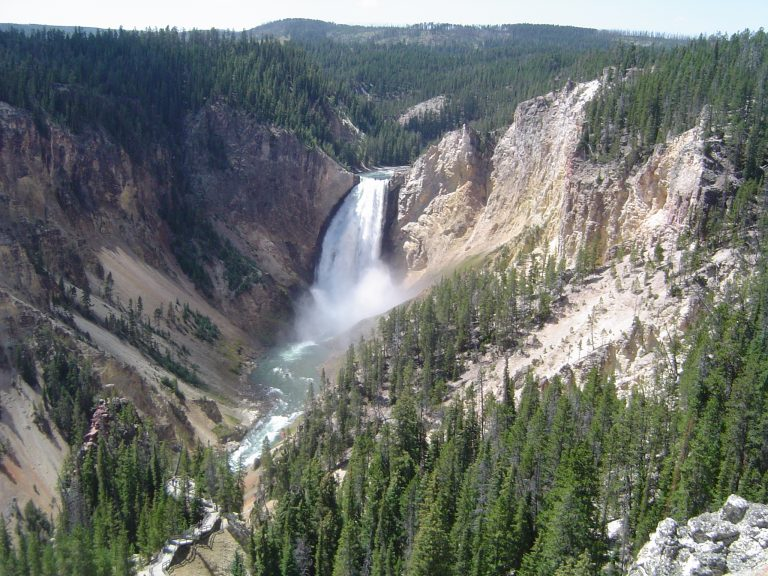
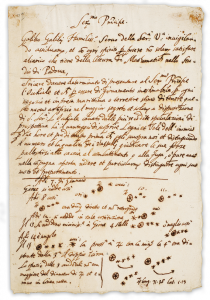
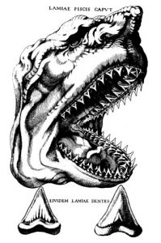
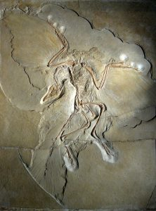
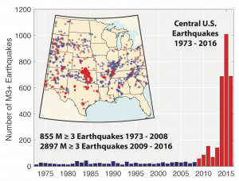

Mục tiêu học tập
Sau Chương 1, bạn cần làm được từng điều dưới đây. Nhãn cho biết mục nào trình bày nội dung đó.
- 1.1Phân biệt quan sát khách quan với chủ quan, và quan sát định lượng với định tính.
- 1.1Nhận diện ngụy khoa học dựa trên việc nó thiếu tính khả phủ chứng.
- 1.3So sánh phương pháp Aristotle và Galileo dùng để mô tả thế giới tự nhiên.
- 1.2Giải thích phương pháp khoa học và áp dụng nó vào một vấn đề hay câu hỏi.
- 1.4Mô tả nền tảng của địa chất học hiện đại, như đồng nhất luận, và so sánh với thuyết biến họa.
- 1.5Giải thích vì sao việc học địa chất quan trọng, và vật chất Trái Đất biến đổi thế nào qua chu trình thạch học.
- 1.6Mô tả các bước của một nghiên cứu khoa học đáng tin cậy và giải thích các lập luận tu từ của những người phủ nhận khoa học.
Cách dùng tài liệu này
Các từ gạch chân là thuật ngữ chính. Nhấn vào một từ, hoặc mở Thuật ngữ ở góc dưới bên phải, để đọc và tìm mọi định nghĩa trong chương. Ô tìm kiếm nhận cả tiếng Việt không dấu và tên tiếng Anh.
1.1Khoa học là gì?
Các nhà khoa học tìm hiểu những nguyên lý cơ bản giải thích các quy luật và quá trình tự nhiên. Khoa học không chỉ là một khối kiến thức: đó là cách đánh giá và tạo ra tri thức mới mà không thiên kiến, dựa vào bằng chứng khách quan thay vì chủ quan.
Quan sát: khách quan và chủ quan
Một không chịu thiên kiến cá nhân và giống nhau với mọi người. Một dựa trên cảm xúc và niềm tin của một người, và chỉ riêng người đó có. Con người vốn có thiên kiến, nên mục tiêu là giảm thiên kiến hết mức có thể.

Đo lường: định lượng và định tính
Các nhà khoa học cũng giảm thiên kiến bằng cách ưu tiên phép đo (một con số cụ thể) hơn mô tả (mô tả chung hoặc tương đối). Con số chính xác hơn và có thể phân tích thống kê.
| Tính chất | Định tính | Định lượng |
|---|---|---|
| Màu sắc | "Hòn đá màu đỏ." | Đo bước sóng ánh sáng phản xạ. |
| Tỷ trọng | "Hòn đá nặng." | Đo tỷ lệ các khoáng vật cấu thành. |
Tính khả phủ chứng và ngụy khoa học
Mọi khẳng định khoa học đều có (falsifiability): bất kỳ giả thuyết nào cũng có thể được kiểm tra và chứng minh là sai. Chỉ sau khi đã loại trừ triệt để các kết quả sai, các ý tưởng cạnh tranh và các biến thể, một giả thuyết mới trở thành một đáng tin cậy. Việc chứng minh các ý tưởng hiện hành là sai đã thúc đẩy sự nghiệp của nhiều nhà khoa học.
Tính khả phủ chứng phân biệt khoa học với , tức tập hợp ý tưởng trông có vẻ khoa học nhưng không dùng phương pháp khoa học. Chiêm tinh học là một ví dụ: nó cho rằng chuyển động của các thiên thể ảnh hưởng đến hành vi con người, nhưng kết luận không dựa trên bằng chứng thực nghiệm và các khẳng định của nó không có tính khả phủ chứng. Đừng nhầm với thiên văn học, ngành khoa học nghiên cứu các thiên thể và vũ trụ.
Ví dụ trong chương
Những hẻm núi bị khoét vào lớp vật liệu xốp từ vụ phun trào núi St. Helens ngày 18/5/1980 đôi khi bị ngụy khoa học dùng làm bằng chứng cho một Trái Đất rất trẻ. Thực tế, lớp trầm tích núi lửa chưa cố kết, chưa đá hóa đó bị xói mòn dễ hơn nhiều so với đá ở những hẻm núi như Grand Canyon.
Khoa học là một quá trình xã hội
Các nhà khoa học chia sẻ ý tưởng tại hội nghị, qua công bố, và cả trong các chuyến khảo sát thực địa. Bài báo gửi đăng được (peer review) bởi chuyên gia cùng lĩnh vực, nhằm loại bỏ thông tin sai, kết quả không hợp lệ và suy đoán vô căn cứ. Quá trình này chậm, thận trọng và bảo thủ: một giả thuyết chỉ được chấp nhận là lý thuyết khi có bằng chứng áp đảo từ nhiều nhà nghiên cứu độc lập.
Tự kiểm tra: Bài kiểm tra mục 1.1 trong giáo trình (tiếng Anh) ↗
1.2Phương pháp khoa học
Khoa học hiện đại dựa trên . Phương pháp này có lịch sử lâu dài, nhưng được Ibn al-Haytham hoàn thiện đầy đủ lần đầu cách đây hơn 1.000 năm. Cốt lõi của nó là kết luận phải dựa trên bằng chứng khách quan, không dựa trên ý kiến hay lời đồn.
Bước 1: Quan sát, vấn đề hoặc câu hỏi nghiên cứu
Xác định một vấn đề hoặc câu hỏi, ví dụ một hiện tượng địa chất mà giới khoa học chưa giải thích thỏa đáng. Bước này thường bao gồm việc đọc tài liệu khoa học để tìm hiểu các nghiên cứu trước có liên quan.
Bước 2: Giả thuyết
Đề xuất một câu trả lời khả dĩ, tức một , trước khi làm thí nghiệm hay khảo sát thực địa. Giả thuyết phải cụ thể, có tính khả phủ chứng và dựa trên các công trình khoa học khác. Các nhà địa chất thường dùng (multiple working hypotheses) vì họ hiếm khi kiểm soát được thí nghiệm một cách chặt chẽ và có ít cơ hội đến thực địa.


Bước 3: Thí nghiệm và điều chỉnh giả thuyết
Thiết kế một để ủng hộ hoặc bác bỏ giả thuyết. Thí nghiệm không chỉ diễn ra trong phòng thí nghiệm: quan sát các quá trình tự nhiên ngoài thực địa cũng là thí nghiệm. Mọi thí nghiệm đều thu thập dữ liệu khách quan một cách có hệ thống. Nếu dữ liệu mâu thuẫn với giả thuyết, giả thuyết được điều chỉnh và kiểm tra lại. Giả thuyết đứng vững thì sẵn sàng để chia sẻ với các chuyên gia.
Bước 4: Bình duyệt đồng cấp, công bố và tái lập
Kết quả được công bố trên các tạp chí như Science và Nature, nhưng chỉ sau khi phương pháp, kết quả và phần thảo luận được bình duyệt nghiêm ngặt. Sau khi công bố, các nhà khoa học khác cố gắng tái lập (replication) kết quả, điều cần thiết để xác nhận độ tin cậy. Công nghệ mới về sau có thể xác nhận hoặc bác bỏ những ý tưởng từng được chấp nhận.
Bước 5: Xây dựng lý thuyết
Trong giao tiếp thường ngày, "lý thuyết" nghĩa là phỏng đoán. Trong khoa học, một là lời giải thích tốt nhất sau khi giả thuyết đã được nhiều nghiên cứu độc lập, có ghi chép, kiểm tra nhiều lần và được chấp nhận rộng rãi. Giả thuyết là lời giải thích tạm thời trước thí nghiệm; lý thuyết được nhiều thí nghiệm xác nhận sau đó.
| Ý tưởng | Nguồn gốc | Diễn biến |
|---|---|---|
| Trôi dạt lục địa → kiến tạo mảng | Alfred Wegener, 1912 | Ban đầu bị bác bỏ. Sau nhiều thập kỷ thu thập bằng chứng mới bằng công nghệ tiên tiến hơn, nó được chấp nhận và điều chỉnh thành lý thuyết kiến tạo mảng. |
| Tiến hóa bằng chọn lọc tự nhiên | Charles Darwin, giữa thế kỷ 19 | Đã trụ vững qua nhiều thế hệ kiểm chứng; được cập nhật nhờ công nghệ hiện đại và vẫn được bằng chứng mới nhất ủng hộ. |
Tự kiểm tra: Bài kiểm tra mục 1.2 trong giáo trình (tiếng Anh) ↗
1.3Tư tưởng khoa học thời kỳ đầu
Tư tưởng khoa học phương Tây bắt đầu ở Athens cổ đại, một nền dân chủ khuyến khích tư duy độc lập. Nổi bật nhất trong các nhà triết học kiêm khoa học thời đầu là Aristotle (sinh năm 384 TCN), học trò của Plato và thầy dạy của Alexander Đại đế. Ông dùng , coi trọng bằng chứng từ thí nghiệm và quan sát.
Suy luận diễn dịch và quy nạp
| Suy luận diễn dịch | Suy luận quy nạp | |
|---|---|---|
| Hướng | Nguyên lý chung → kết luận cụ thể | Quan sát mới → nguyên lý chung |
| Cơ sở | Mối liên hệ logic | Phân tích bằng chứng đo được |
| Ví dụ | Mọi loài chim đều có lông vũ; chim sẻ là chim; vậy chim sẻ có lông vũ. (Hoặc: nếu A=B và B=C thì A=C.) | Liệt kê đặc điểm của chim (lông vũ, mỏ không răng, xương rỗng, không có chi trước, đẻ trứng ra ngoài), kiểm tra xem dơi có những đặc điểm đó không; không có, vậy dơi không phải chim. |
| Điểm yếu | Tiền đề sai dẫn đến kết luận sai: "Mọi loài biết bay đều là chim; dơi biết bay; vậy dơi là chim." | Chương không đề cập. |
| Trong chương | Phương pháp của Aristotle | Gần với cách tiếp cận dựa trên bằng chứng của Galileo, mà chương đặt đối lập với Aristotle |
Từ La Mã đến thời Phục hưng
Alexander truyền bá văn hóa Hy Lạp, được người La Mã tiếp thu và mang vào châu Âu. Sau khi La Mã sụp đổ năm 476, khoa học châu Âu đình trệ; các học giả trung cổ trung thành đi theo logic của Aristotle suốt nhiều thế kỷ. Trong khi đó, khoa học phát triển rực rỡ ở Trung Đông từ năm 800 đến 1450. Avicenna (Ibn Sina) là một trong những người đầu tiên liên hệ núi non với động đất và xói mòn. Trong thời Phục hưng (thế kỷ 14–17), giới học giả bắt đầu phê phán cách tiếp cận của Aristotle, mở đường cho chủ nghĩa kinh nghiệm trở thành trụ cột của cuộc cách mạng khoa học thế kỷ 17.
Thuyết địa tâm và thuyết nhật tâm
Vào thế kỷ 2, nhà thiên văn Hy Lạp Claudius Ptolemy áp dụng logic của Aristotle và suy luận diễn dịch rằng mọi thiên thể quay quanh Trái Đất ở trung tâm vũ trụ: đó là (mô hình địa tâm), tồn tại đến tận thời Phục hưng. Khoảng 1507–1515, Nicolaus Copernicus (1473–1543) đưa ra chứng minh toán học cho (Mặt Trời ở trung tâm). Sau khi kính viễn vọng ra đời năm 1608, các quan sát tốt hơn đã ủng hộ mô hình này.
Kepler, Galileo và cuộc cách mạng khoa học
Johannes Kepler (1571–1630), nhà toán học và thiên văn học người Đức, cải tiến các tính toán của Copernicus và mô tả quỹ đạo hành tinh là hình elip. Galileo Galilei (1564–1642), nhà thiên văn học người Ý, dùng kính viễn vọng mới để quan sát bốn vệ tinh lớn nhất của Sao Mộc. Đây là bằng chứng trực tiếp đầu tiên chống lại thuyết địa tâm, vì các vệ tinh quay quanh Sao Mộc thì không thể đồng thời quay quanh Trái Đất. Việc ủng hộ thuyết nhật tâm khiến Galileo xung đột với quan điểm thời đó và Giáo hội Công giáo; năm 1633 ông bị kết tội dị giáo và bị quản thúc tại gia cho đến khi qua đời năm 1642.

Vì sao Galileo là "nhà khoa học hiện đại đầu tiên"
Ông làm thí nghiệm để chứng minh hoặc bác bỏ các ý tưởng có tính khả phủ chứng, và đưa ra kết luận dựa trên phân tích toán học bằng chứng định lượng. Đó là bước ngoặt so với lối tư duy diễn dịch của các triết gia Hy Lạp như Aristotle, mở đầu sự chuyển dịch sang bằng chứng và thí nghiệm, tạo tiền đề cho các nhà địa chất như Hutton và Steno.
Tự kiểm tra: Bài kiểm tra mục 1.3 trong giáo trình (tiếng Anh) ↗
1.4Nền tảng của địa chất học hiện đại
Các nguyên lý địa chất hiện đại hình thành trong thế kỷ 17 và 18, như một phần của cuộc cách mạng khoa học ở châu Âu.
- Aristotle ra đời; suy luận diễn dịch, kinh nghiệm.
- Thuyết địa tâm của Ptolemy.
- Ibn al-Haytham lần đầu hoàn thiện phương pháp khoa học.
- Thuyết nhật tâm của Copernicus.
- Galileo quan sát các vệ tinh Sao Mộc; Kepler mô tả quỹ đạo elip. (Kính viễn vọng ra đời năm 1608.)
- Nicolaus Steno: bề mặt Trái Đất có thể thay đổi; các lớp trầm tích hình thành nằm ngang, lớp cổ nhất ở dưới.
- James Hutton: đồng nhất luận; Trái Đất rất già.
- Georges Cuvier: thuyết biến họa; người đầu tiên cho rằng các loài có thể tuyệt chủng.
- Principles of Geology của Charles Lyell phổ biến đồng nhất luận.
- Alfred Wegener đề xuất thuyết trôi dạt lục địa.
- Các phát hiện dưới đáy biển của Tharp, Heezen, Hess, Wilson và những người khác dẫn đến kiến tạo mảng.
Steno và Hutton
Nicolaus Steno (1638–1686), một linh mục người Đan Mạch nghiên cứu giải phẫu học và địa chất, là người đầu tiên đề xuất rằng bề mặt Trái Đất có thể thay đổi theo thời gian. Ông cho rằng đá trầm tích như sa thạch và đá phiến sét hình thành thành các lớp nằm ngang, lớp cổ nhất ở dưới cùng.

Vào thế kỷ 18, nhà tự nhiên học người Scotland James Hutton (1726–1797) so sánh trầm tích do sông và bờ biển để lại với các tầng đá trầm tích lộ ra. Ông đặt giả thuyết rằng đá cổ hình thành bởi chính những quá trình ta thấy ngày nay. Vì các quá trình đó diễn ra chậm, Trái Đất hẳn phải rất già, có thể hàng trăm triệu năm.
Đây là nguyên lý (uniformitarianism): các quá trình tự nhiên ngày nay vận hành giống như trong quá khứ, tức các quy luật tự nhiên đồng nhất trong không gian và thời gian. Các nhà địa chất tóm gọn là "hiện tại là chìa khóa để hiểu quá khứ" ("the present is the key to the past").
Đồng nhất luận và thuyết biến họa
| Thuyết biến họa (catastrophism) | Đồng nhất luận (uniformitarianism) | |
|---|---|---|
| Ý chính | Đá và địa hình hình thành do những biến cố thảm họa lớn; các quá trình ngày nay không vận hành trong quá khứ. | Các quá trình tự nhiên ngày nay vận hành giống như trong quá khứ. |
| Nhân vật chính | Abraham Gottlob Werner (1750–1817), Georges Cuvier (1769–1832) | James Hutton; được Charles Lyell (1797–1875) phổ biến |
| Tuổi Trái Đất | Chương không đề cập | Rất già; Lyell cho rằng có thể hơn 300 triệu năm |
| Di sản | Cuvier, "cha đẻ của cổ sinh vật học động vật có xương sống," là người đầu tiên cho rằng các loài có thể tuyệt chủng, nhưng tin rằng loài mới xuất hiện nhờ sáng tạo đặc biệt sau những trận đại hồng thủy. | Chiếm ưu thế đến mức biến đổi thảm họa bị coi là dị giáo, làm chậm việc chấp nhận những ý tưởng như một tiểu hành tinh va chạm đã kết liễu khủng long. |
"The thread of operation is broken; nature has changed course…""Mạch vận hành đã bị cắt đứt; tự nhiên đã đổi hướng…"Georges Cuvier, bảo vệ thuyết biến họa (trích trong Chương 1; bản dịch của tài liệu này)
Lyell và Darwin
Ý tưởng của Hutton đang dần bị lãng quên cho đến khi luật sư kiêm nhà địa chất người Anh Charles Lyell viết Principles of Geology (đầu thập niên 1830) và sau đó là Elements of Geology. Sách của ông cổ vũ đồng nhất luận và một Trái Đất rất già, và cuối cùng công chúng đã chấp nhận cả hai. Charles Darwin (1809–1882) mang theo Principles of Geology trong chuyến hải trình năm năm trên tàu HMS Beagle, và dùng đồng nhất luận cùng thời gian sâu để phát triển những ý tưởng ban đầu về tiến hóa.
Kiến tạo mảng: bài học về tư duy giáo điều
Lý thuyết và có lẽ là bước tiến lớn nhất trong lịch sử địa chất học. Trớ trêu thay, việc chấp nhận cứng nhắc đồng nhất luận lại làm nó chậm được công nhận, vì các lục địa bị xem là cố định. Ý tưởng này mất nhiều thời gian vì ba lý do:
- Chuyển động quá chậm nên bị bỏ qua.
- Bằng chứng tốt nhất nằm ẩn dưới đáy đại dương.
- Các lý thuyết được chấp nhận có sức ì lớn; các nhà khoa học kháng cự và chế giễu ý tưởng mới.
Alfred Wegener là người đầu tiên tập hợp một bộ dữ liệu lớn cho thấy các lục địa dịch chuyển theo thời gian, nhưng ông phần lớn bị phớt lờ. Những người đi sau, gồm Marie Tharp, Bruce Heezen, Harry Hess, Laurence Morley, Frederick Vine, Drummond Matthews, Kiyoo Wadati, Hugo Benioff, Robert Coats và J. Tuzo Wilson, đã dùng công nghệ đáy biển mới để tìm ra sống núi giữa đại dương (mid-ocean ridge), sự sắp xếp thành dải của động đất và các dải dị thường từ (magnetic striping). Cùng nhau, họ tạo ra một (paradigm shift) biến địa chất học thành ngành khoa học như ngày nay.
Tự kiểm tra: Bài kiểm tra mục 1.4 trong giáo trình (tiếng Anh) ↗
1.5Nghiên cứu địa chất
Các nhà địa chất áp dụng phương pháp khoa học vào vật chất và các quá trình của Trái Đất, thường mượn kiến thức vật lý và hóa học (ví dụ lực trong một vụ sạt lở đất, hay tương tác hóa học giữa nước và đá). Từ (địa chất học) bắt nguồn từ tiếng Hy Lạp geo (Trái Đất) và logos (suy nghĩ, luận giải).
1.5.1 Vì sao học địa chất?
Tài nguyên thiên nhiên
là bất kỳ vật liệu tự nhiên nào có thể khai thác từ Trái Đất để thu lợi kinh tế. Các nhà địa chất giúp khai thác nhiên liệu hóa thạch (than, dầu mỏ), kim loại (đồng, nhôm, sắt) và nước từ sông suối cũng như các tầng chứa nước ngầm.
| Loại | Định nghĩa | Ví dụ trong chương |
|---|---|---|
| Có số lượng cố định; cạn dần khi sử dụng. | Dầu mỏ | |
| Có thể được thay thế hoặc tái sinh. | Năng lượng mặt trời, năng lượng gió, gỗ |
Tác động môi trường
Khai thác và sử dụng tài nguyên ảnh hưởng đến môi trường và sức khỏe con người. Đốt nhiên liệu hóa thạch thải ra các hóa chất có hại, đặc biệt với trẻ em. Khai khoáng có thể thải kim loại nặng độc hại như chì và thủy ngân vào đất và nguồn nước. Hiểu rõ trữ lượng còn lại, khả năng khai thác và khả năng tái tạo giúp ta quản lý tài nguyên bền vững.
Tai biến thiên nhiên
là những hiện tượng có thể gây nguy hiểm cho tính mạng hoặc tài sản. Không nơi nào hoàn toàn an toàn, nên hiểu địa chất địa phương là một trong những cách tự bảo vệ tốt nhất. Các tai biến địa chất gồm sạt lở đất, động đất, sóng thần, lũ lụt, núi lửa phun trào và mực nước biển dâng.

Khoa học hệ thống Trái Đất
Địa chất là nơi các ngành khoa học khác giao thoa, trong . Một hệ thống là tập hợp các đối tượng và quá trình tương tác với nhau; khoa học hệ thống Trái Đất xem hành tinh là các hệ thống (các quyển) tương tác, và vận dụng vật lý, hóa học, sinh học, khí tượng học, thủy văn học và nhiều ngành khác.
1.5.2 Chu trình thạch học
(chu trình đá, rock cycle) là cách nhìn cơ bản nhất về vật chất Trái Đất: chúng là gì, hình thành ra sao và liên hệ với nhau thế nào. Hãy dùng sơ đồ như bản đồ khi đọc các bước bên dưới.
- Đá nóng chảy. là đá nóng chảy dưới bề mặt (trong vỏ hoặc manti); là đá nóng chảy phun trào lên bề mặt.
- Đá magma. Khi macma hoặc dung nham nguội đi, khoáng vật lớn dần trong đó qua quá trình , tạo thành (tiếng Latinh ignis: lửa).
- Trầm tích. Đá trên bề mặt chịu (bị phá vỡ cơ học và hóa học thành mảnh vụn) và (mảnh vụn bị mang khỏi vị trí ban đầu). Các mảnh vụn này là : sỏi, cát, bột và sét, được vận chuyển bởi sông suối, dòng hải lưu, sông băng và gió.
- Đá trầm tích. Trầm tích dừng lại qua quá trình , thường dưới nước. Bị chôn vùi gây ra (compaction), và khoáng chất kết tủa từ nước ngầm gây ra (gắn kết, cementation). Hai quá trình này gọi chung là (thạch hóa, lithification), tạo nên như sa thạch và đá phiến sét. thì hình thành do khoáng vật kết tủa trực tiếp từ dung dịch.
- Đá biến chất. Nhiệt độ hoặc áp suất tăng cao (do bị chôn sâu, hoặc tiếp xúc với macma, dung nham nóng) làm tinh thể khoáng vật lớn lên hoặc biến thành khoáng vật mới có thành phần hóa học tương tự, tạo thành (meta-: thay đổi; -morphos: hình dạng). Nếu đá nóng chảy, chu trình lại bắt đầu.
1.5.3 Kiến tạo mảng và các lớp của Trái Đất
Kiến tạo mảng là nguyên lý thống nhất nền tảng của địa chất học và chu trình thạch học. Nó mô tả cách các lớp của Trái Đất chuyển động tương đối với nhau, tập trung vào các ở lớp ngoài. Các mảng va chạm, trượt qua nhau và tách xa nhau trên linh động bên dưới. Các dạng địa hình lớn hình thành tại ranh giới mảng. (Chi tiết ở Chương 2.)
| Lớp | Thành phần | Đặc điểm chính |
|---|---|---|
| Chủ yếu silic, oxy, nhôm, sắt, magie | Vỏ lục địa: dày ~50 km, gồm đá magma và đá trầm tích tỷ trọng thấp. Vỏ đại dương: dày ~10 km, đá magma kiểu bazan tỷ trọng cao; phủ ~70% hành tinh. | |
| (lớp phủ) | (silica, sắt, magie) | Lớp lớn nhất về thể tích; phần lớn ở thể rắn; xuống đến độ sâu ~2.900 km. Phần trên nóng và dẻo cho phép các mảng di chuyển. |
| (lõi) | Sắt và niken | Dày ~3.500 km; nhân ngoài lỏng và nhân trong rắn. Chuyển động trong nhân tạo ra từ trường Trái Đất. |
là lớp vật lý cứng gồm vỏ và một phần manti trên; các mảng kiến tạo là những mảnh của nó. Ranh giới giữa vỏ và manti là (mặt Moho); chương có bản đồ độ sâu của mặt này trên toàn cầu (nó sâu hơn ở nơi núi đang hình thành).
1.5.4 Thời gian địa chất và thời gian sâu
"…we find no vestige of a beginning; no prospect of an end.""…chúng ta không tìm thấy dấu vết nào của một khởi đầu, cũng không thấy viễn cảnh nào về một kết thúc."James Hutton, 1788 (bản dịch của tài liệu này)
Hutton không hoàn toàn đúng (Trái Đất có khởi đầu và sẽ có kết thúc), nhưng ông nói lên việc con người khó hình dung đến mức nào. Ông không đưa ra tuổi cụ thể của Trái Đất, dù là người đầu tiên cho rằng nó rất già. Ngày nay ta biết Trái Đất khoảng 4,54 ± 0,05 tỷ năm tuổi, được tính lần đầu năm 1956 bởi Clair Patterson (Caltech), người định tuổi phóng xạ một thiên thạch tìm thấy ở Arizona bằng đồng vị chì. So với đó, ghi chép của con người rất ngắn: việc nghiên cứu động đất chỉ có khoảng 100 năm, trong khi bằng chứng địa chất cho thấy những trận động đất lớn từ hàng nghìn năm trước.
| Liên đại | Đại | Ý nghĩa và sự sống |
|---|---|---|
| Liên đại Hỏa thành (Hadean) | Gọi chung là thời kỳ Tiền Cambri | Sự sống xuất hiện >3.800 Ma; sinh vật đơn bào như vi khuẩn chiếm ưu thế từ 3.500 đến 542 Ma (88% thời gian địa chất). |
| Liên đại Thái cổ (Archean) | ||
| Liên đại Nguyên sinh (Proterozoic) | ||
| Liên đại Hiển sinh (Phanerozoic) "sự sống hữu hình"; 542 triệu năm gần nhất | Đại Cổ sinh (Paleozoic) | "Sự sống cổ": động vật không xương sống, cá, lưỡng cư, bò sát. |
| Đại Trung sinh (Mesozoic) | "Sự sống giữa"; Kỷ nguyên Bò sát. Khủng long phong phú, nhiều loài tiến hóa thành chim. Kết thúc bằng sự tuyệt chủng hàng loạt của khủng long. | |
| Đại Tân sinh (Cenozoic) | "Sự sống mới"; Kỷ nguyên Thú. Hóa thạch người sơ khai (họ Người, Hominidae) chỉ xuất hiện trong vài triệu năm cuối của đại này. |
là đơn vị lớn nhất của thời gian địa chất. Liên đại Hiển sinh (phaneros: hữu hình; zoic: sự sống) đánh dấu sự bùng nổ của động vật đa bào có phần cứng như vỏ, được lưu giữ dưới dạng . Chương 7 và 8 trình bày sâu hơn về thời gian địa chất.
1.5.5 Dụng cụ của nhà địa chất
| Dụng cụ | Nơi dùng | Công dụng |
|---|---|---|
| Búa địa chất | Thực địa | Lấy mẫu bề mặt đá còn tươi |
| Kính lúp | Thực địa | Quan sát chi tiết khoáng vật |
| La bàn | Thực địa | Đo hướng của các cấu trúc địa chất |
| Bản đồ | Thực địa | Ghi lại sự phân bố đá và khoáng vật tại chỗ |
| Nam châm | Thực địa | Nhận biết khoáng vật từ tính như magnetit |
| Axit clohydric loãng | Thực địa | Nhận biết khoáng vật cacbonat như calcit, hoặc đá vôi |
| Kính hiển vi quang học | Phòng thí nghiệm | Thành phần khoáng vật và kích thước hạt của đá và đất |
| Phổ kế laser và khối phổ kế | Phòng thí nghiệm | Thành phần hóa học và tuổi địa chất của khoáng vật |
| Địa chấn kế (+ radar xuyên đất) | Thực địa/PTN | Ghi và định vị động đất; định vị vật thể bị chôn vùi |
| Mô phỏng máy tính | Phòng thí nghiệm | Biến dữ liệu thành các mô hình lý thuyết có thể kiểm chứng |
| Giếng khoan | Thực địa | Nhà địa chất thủy văn lấy mẫu chất lượng và trữ lượng nước ngầm |
| Kính hiển vi điện tử quét | Phòng thí nghiệm | Nhà địa hóa phân tích khoáng vật ở cấp nguyên tử bằng tia X |
| Sắc ký khí | Phòng thí nghiệm | Chất lỏng và khí bị giữ trong băng hoặc đá |

Công nghệ mới mang lại quan sát mới, giúp điều chỉnh hoặc bác bỏ những ý tưởng cũ. Vì sẽ không bao giờ có công nghệ tối thượng, cũng sẽ không bao giờ có quan sát tối thượng: khoa học luôn tiến lên.
Tự kiểm tra: Bài kiểm tra mục 1.5 trong giáo trình (tiếng Anh) ↗
1.6Phủ nhận khoa học và đánh giá nguồn tin
Các khóa nhập môn giảng dạy lý thuyết đã được chấp nhận, không kèm những ý tưởng đối lập mà sinh viên nâng cao sẽ gặp sau này. Tuy nhiên, có những nhóm cho rằng các lý thuyết đã được xác lập là sai vì lý do hệ tư tưởng chứ không phải khoa học. Mục này bàn về cách phân biệt thông tin dựa trên bằng chứng với ngụy khoa học.
1.6.1 Phủ nhận khoa học
là việc cho rằng các lý thuyết đã được xác lập là sai dựa trên hệ tư tưởng chủ quan (lý do xã hội, chính trị hoặc kinh tế) thay vì giá trị khoa học. Ba ví dụ trong chương là phản đối việc dạy tiến hóa ở trường công, phản đối mối liên hệ giữa khói thuốc lá và ung thư, và phản đối mối liên hệ giữa hoạt động của con người và biến đổi khí hậu. Phủ nhận biến đổi khí hậu là ví dụ gắn chặt nhất với địa chất học.
1. Làm suy yếu khoa học
Cho rằng phương pháp có sai sót hoặc khoa học "chưa ngã ngũ." Nhưng các nhà khoa học tránh tuyên bố chân lý tuyệt đối vì khoa học dựa trên tính khả phủ chứng; sự thận trọng đó không đồng nghĩa với không chắc chắn.
2. Công kích nhà nghiên cứu
Cho rằng các nhà khoa học bị chi phối bởi hệ tư tưởng hay tiền bạc (ví dụ thổi phồng kết quả để xin tài trợ). Đây là (ad hominem).
3. Đòi "cân bằng"
Đòi thời lượng ngang nhau trên truyền thông và trong lớp học, tạo ảo giác về hai phía có giá trị như nhau dù bằng chứng nghiêng hẳn về một phía.
Kết luận rút ra từ hệ tư tưởng không có chỗ trong nghiên cứu và giáo dục khoa học. Mô hình Trái Đất phẳng không được dạy song song với kiến tạo mảng, vì nó đã bị phương pháp khoa học bác bỏ và những người ủng hộ nó không tuân theo phương pháp đó. Cách duy nhất để thay đổi một kết luận khoa học là một kết luận mới đạt được bằng phương pháp khoa học.

Tình huống: thuốc lá
Từ thập niên 1960, trong khoảng ba thập kỷ, ngành công nghiệp thuốc lá dùng các lập luận tu từ để phủ nhận mối liên hệ giữa thuốc lá và ung thư. Khi các nghiên cứu cho thấy mối liên hệ một cách áp đảo, họ chuyển sang gieo rắc nghi ngờ ("cần nghiên cứu thêm") để trì hoãn cảnh báo và luật pháp. Chương lưu ý chiến thuật này ngày nay được dùng để phủ nhận vai trò của con người trong biến đổi khí hậu.
1.6.2 Đánh giá nguồn tin
Thông tin trên mạng rất dồi dào, nên bất kỳ ai tìm hiểu khoa học đều phải phân biệt nguồn đáng tin với ngụy khoa học và thông tin sai. Thông tin chất lượng đến từ phương pháp khoa học. Một (inference, diễn giải) hợp lệ dựa trên dữ liệu khách quan, và dữ liệu cùng suy luận đáng tin cậy được ghi rõ và tách bạch.

Danh sách kiểm tra một nghiên cứu đáng tin cậy
Các ô đánh dấu không được lưu; danh sách này để bạn rà soát một nguồn khi đọc.
Tạp chí uy tín cũng có lúc sai
Năm 1998, một bài báo trên tạp chí uy tín The Lancet liên hệ vắc-xin MMR với chứng tự kỷ. Các nhà báo phát hiện tác giả có nhiều xung đột lợi ích và đã bịa đặt dữ liệu, và bài báo bị rút lại năm 2010.
Tự kiểm tra: Bài kiểm tra mục 1.6 trong giáo trình (tiếng Anh) ↗
Tóm tắt
Khoa học là một quá trình không có khởi đầu cũng không có kết thúc: ta không bao giờ biết được toàn bộ chân lý, nhưng phương pháp khoa học là cách tốt nhất để hiểu vũ trụ. Các nhà khoa học rút ra kết luận từ bằng chứng khách quan và hợp nhất chúng thành các mô hình thống nhất. Các nhà địa chất, bắt đầu từ Hutton, cũng xem việc nghiên cứu Trái Đất là một quá trình liên tục: lịch sử 4,5 tỷ năm, tài nguyên và các tai biến của nó. Địa chất học cũng dạy cách đi đến kết luận đáng tin cậy, và cách nhận diện, ngăn chặn thông tin sai.
Ôn nhanh
- Bằng chứng khách quan + định lượng tốt hơn chủ quan + định tính.
- Tính khả phủ chứng phân biệt khoa học với ngụy khoa học.
- Câu hỏi → giả thuyết → thí nghiệm → bình duyệt → lý thuyết, lặp lại khi có thêm bằng chứng.
- Aristotle suy luận diễn dịch; Galileo kiểm tra các ý tưởng có tính khả phủ chứng bằng bằng chứng định lượng.
- Đồng nhất luận ("hiện tại là chìa khóa để hiểu quá khứ") thay thế thuyết biến họa.
- Chu trình thạch học: đá magma, đá trầm tích và đá biến chất chuyển hóa lẫn nhau.
- Kiến tạo mảng thống nhất địa chất học; Trái Đất khoảng 4,54 tỷ năm tuổi.
- Phủ nhận khoa học: làm suy yếu khoa học, công kích nhà khoa học, đòi cân bằng giả tạo.
Tự kiểm tra: Bài ôn tập Chương 1 trong giáo trình (tiếng Anh) ↗
Tài liệu tham khảo
Các nguồn dưới đây bằng tiếng Anh.
Ghi chú kiểm chứng
Mọi nội dung trong tài liệu đã được đối chiếu với chương trong giáo trình. Khi số liệu của chương khác với tài liệu tham khảo hiện hành, tài liệu này giữ giá trị của chương (vì đó là nội dung bạn sẽ được kiểm tra) và ghi chú cập nhật tại đây.
| Chủ đề | Chương ghi | Tài liệu hiện hành |
|---|---|---|
| Bắt đầu Liên đại Hiển sinh | 542 Ma | 538,8 Ma (bảng ICS) |
| Kết thúc Đại Trung sinh (khủng long tuyệt chủng) | khoảng 65 Ma | 66,0 Ma (bảng ICS) |
| Chi Homo đầu tiên | khoảng 2,2 Ma | Hóa thạch Homo cổ nhất được biết, một xương hàm từ Ledi-Geraru, Ethiopia, khoảng 2,8 Ma (Villmoare và cs., 2015, Science 347: 1352–1355). |
| Năm sinh của A. G. Werner | 1750 | 1749 (Encyclopaedia Britannica, mục "Abraham Gottlob Werner") |
Chương viết Steno là "người đầu tiên đề xuất rằng bề mặt Trái Đất có thể thay đổi theo thời gian." Đó là cách trình bày của giáo trình; tài liệu này giữ nguyên.
Thuật ngữ tiếng Việt dùng tên khoa học chính thức (đối chiếu với các mục tương ứng trên Wikipedia tiếng Việt và cách dùng trong tài liệu địa chất); tên gọi thông dụng khác và thuật ngữ tiếng Anh được ghi kèm trong ngoặc ở lần xuất hiện đầu và trong bảng thuật ngữ. Các trích dẫn được giữ nguyên văn tiếng Anh, kèm bản dịch bên dưới.
Nguồn & ghi công
Nội dung được tóm tắt và dịch từ An Introduction to Geology, Chương 1, © 2017 Chris Johnson, Matthew D. Affolter, Paul Inkenbrandt và Cam Mosher, theo giấy phép CC BY-NC-SA 4.0. Tài liệu này được chia sẻ theo cùng giấy phép.
- Hình 1.1: Grand Canyon of the Yellowstone © Matt Affolter (giấy phép của sách).
- Hình 1.3: Eadweard Muybridge, Sallie Gardner, 1878, phạm vi công cộng.
- Hình 1.4: Thí nghiệm giọt hắc ín, Đại học Queensland, John Mainstone, CC BY-SA.
- Hình 1.6: Bản thảo của Galileo về các vệ tinh Sao Mộc, phạm vi công cộng.
- Hình 1.8: Hình minh họa răng cá mập của Steno, phạm vi công cộng.
- Hình 1.9: Hóa lỏng nền đất ở Niigata, Ungtss tại Wikipedia tiếng Anh, phạm vi công cộng.
- Hình 1.14: Archaeopteryx lithographica (mẫu Berlin), H. Raab, CC BY-SA.
- Hình 1.16: Tương quan giữa hút thuốc và ung thư phổi, Sakurambo từ dữ liệu NIH, phạm vi công cộng.
- Hình 1.17: Động đất kích thích tích lũy, USGS, phạm vi công cộng.
- Hình 1.2, 1.5, 1.7, 1.10–1.13, 1.15: vẽ cho tài liệu này từ nội dung chương.